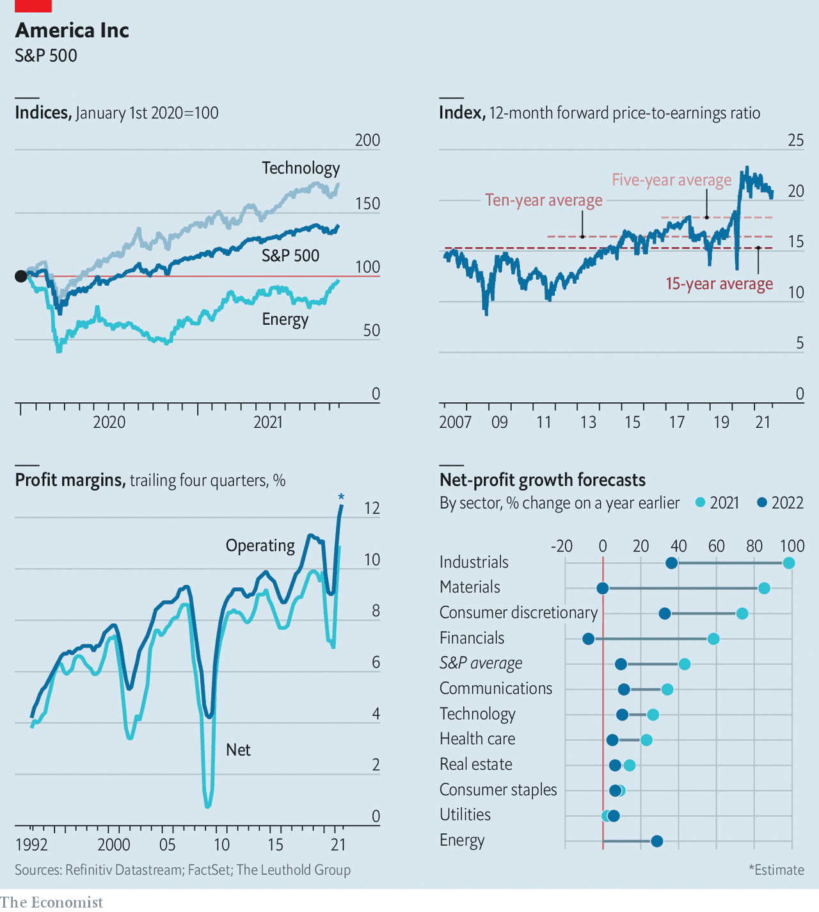

THE PROFITS cranked out by American businesses make them look indestructible. Despite a pandemic and savage slump in 2020, the net income of large American firms for the third quarter of this year is expected to exceed $400bn. Yet as the earnings season gets into full swing three worries are circulating: supply-chain tangles, inflation and wages, and concerns that competition is intensifying in some industries.
This article appeared in the Business section of the print edition under the headline "America Inc’s earning"